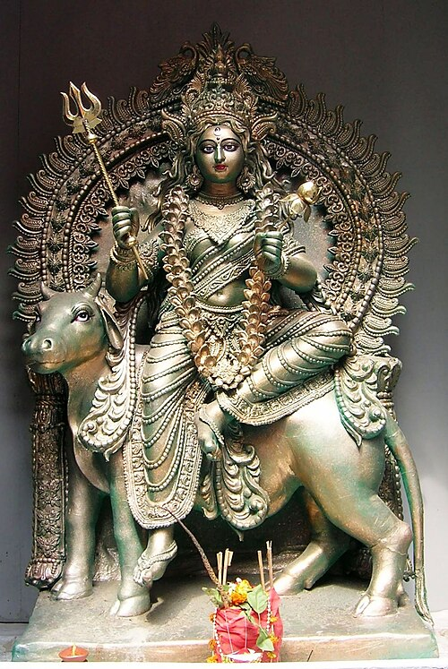

01 / 09
Śailaputrī
Daughter of the mountain


This is Pārvatī as the daughter of Himavat, the mountain king. Her story follows Satī’s death and rebirth as Pārvatī, who returns to Śiva. She comes first in the nine forms. Look for the bull, the trident, and the lotus in her picture.